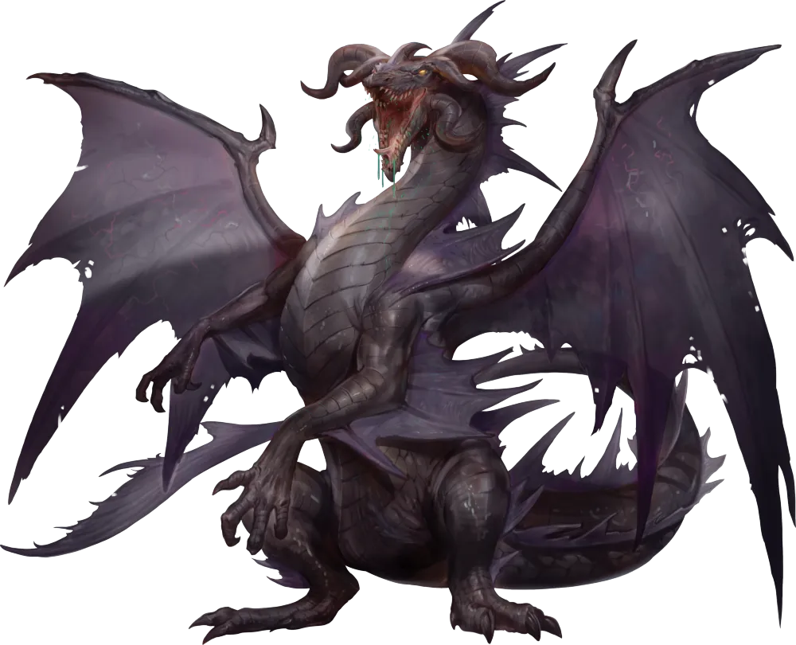

各年龄段数据卡
太古黑龙的脾性就像它们的吐息一样尖酸刻薄，最以嘲弄、侮辱和贬低敌人为乐。尽管身为黑龙一族中最强大的存在，它们却不会仗着崇高地位超然事外，反而常常“恃强凌弱”，恶毒地羞辱比自己弱小的对手。这也使得它们比一般太古龙稍微更容易遭逢报应：有时，折磨猎物的欲望会压倒理智，让它们故意留受害者一命、盘算着日后再来消遣，结果那名受害者却不断变强，终有一日反过来将它们击败。不过，这类逆袭故事终究凤毛麟角，落入太古黑龙嗜虐魔爪的目标，绝大多数只会在痛苦煎熬或宿命绝望中彻底沉沦。 出于现实需要，太古黑龙专门囤积宝石、玻璃以及其他能够耐受其猛烈强酸侵蚀的物品。它们还常常在储藏室里囤积用自身强酸缓慢腌渍的肉食，以便从漫长沉睡中苏醒时大快朵颐。尽管这种点心对大多数生物而言酸涩刺鼻到了极点，甚至常因强酸成分而直接危及性命，但绝大多数黑龙都将其奉为无上珍馐；少数有幸品尝过太古龙腌肉点心、还能活着把故事讲出来的年轻黑龙，无不将这段经历视作莫大的侥幸与荣耀。 骇人、阴毒而缓慢折磨的陷阱，是太古黑龙巢穴的标志性特征。大多数太古龙都偏爱高效的陷阱设计，力求干脆利落地杀死或清除入侵者、不留半点逃生余地；太古黑龙却觉得那样会白白少掉一半乐趣。在它们看来，眼睁睁看着入侵者拼死挣扎求生，却在最后一刻功亏一篑、命丧黄泉，可要精彩有趣得多了。其他太古龙普遍认为太古黑龙的这种做派纯属狂妄托大，但采用这类策略的太古黑龙自己却不这么看――它们对其中潜藏的风险一清二楚，只是觉得从中收获的快感完全值得冒这份险。看它们行事如此冒险，人们或许会以为太古黑龙的死亡率一定远高于其他太古龙；可实际上，这一比例仅仅略高一点而已。原因在于，太古黑龙作为一个整体有着恶魔般的狡黠才智，而且分寸感极佳，清楚地知道究竟该把猎物逼到哪一步，才能既尽情享乐，又绝不会让自己真正陷入半点危险。 沙达尔作者：卡尔・瓦格纳（Carl Wagner） 沙达尔是一头怀揣危险秘密图谋的太古黑龙。因一道位面裂隙而降生于暗影位面的他，由暗影龙抚养长大，自雏龙时期起便在那个暗无天日的世界里成长。然而，来自暗影位面更深处的强大神秘掠袭者――多半与那群被称为“谜团诸神”的神秘神�o有关――杀害了沙达尔的暗影龙养父母。沙达尔之所以能死里逃生，全靠偶遇了一枚被囚禁的巨龙神�o塔利尔的微小碎片，那枚碎片将他转移到了物质位面，使他转危为安。受塔利尔神力的影响，沙达尔的年龄与力量以约莫常理三倍的速度飞速增长，如今虽已拥有太古龙的庞大身躯，阅历却尚不相称。自从死里逃生之后，他便一直设法将被囚禁在月亮之上的塔利尔解救出来。凭借看穿并操纵阴影、乃至在阴影间悄然穿行的独特能力，他在幕后步步为营，谋求塔利尔的重获自由――这既源于他与生俱来的暗影异能，也因为他深知绝大多数其他神�o都不愿看到塔利尔挣脱永恒的囚笼。 |
 太古黑龙 |